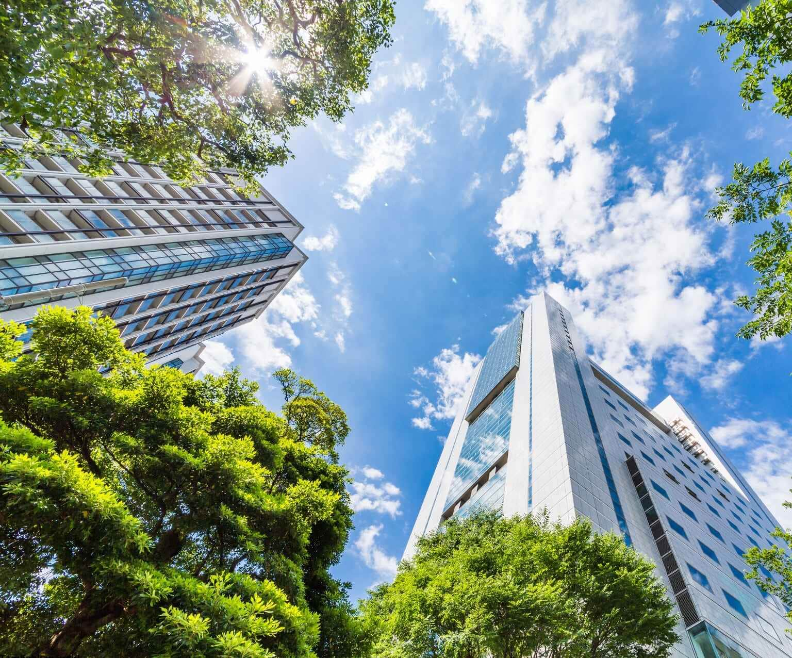
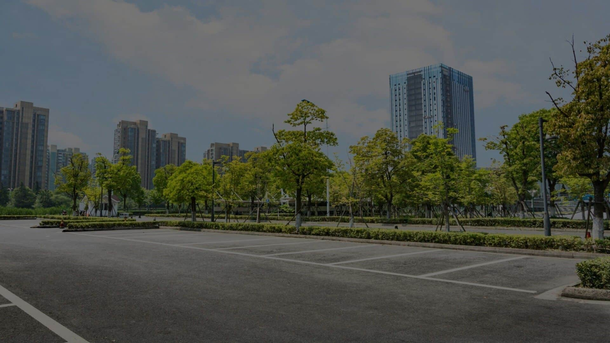
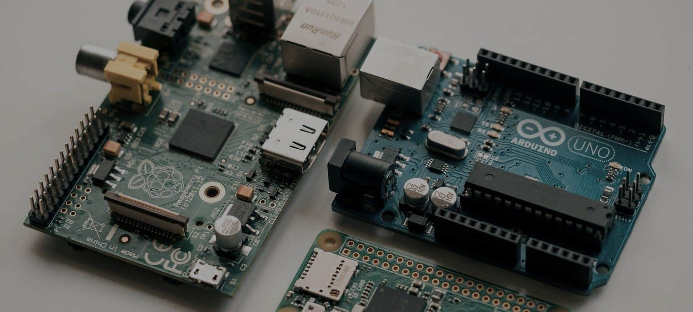

Pengertian Smart City
Smart City adalah sebuah konsep perkotaan yang memanfaatkan teknologi informasi dan komunikasi (TIK) untuk
meningkatkan kualitas hidup warganya. Dalam kota pintar, berbagai aspek kehidupan seperti transportasi,
energi, kesehatan, pendidikan, dan lingkungan diintegrasikan dengan teknologi untuk mencapai efisiensi,
keberlanjutan, dan kenyamanan.
Beberapa Tujuan Smart City : Optimalisasi penggunaan sumber daya, meningkatkan produktivitas.
Meningkatkan kualitas layanan publik seperti penyediakan layanan publik yang lebih cepat, mudah diakses, dan
responsif terhadap kebutuhan warga, serta menciptakan lingkungan yang lebih aman, nyaman, dan berkelanjutan
bagi seluruh warga.
Sub Education Kami
Urbanify: Membangun kota masa depan yang cerdas, cepat, dan responsif. Edukasi Smart City untuk wujudkan kota impianmu. Ayo bersama kami, ciptakan perubahan kehidupan perkotaan yang lebih baik!

MENGAPA URBANIFY MEMILIH
SMART CITY
Urbanify memilih Smart City sebagai fokus utama karena konsep kota cerdas menawarkan solusi komprehensif untuk tantangan perkotaan yang semakin kompleks. Urbanify melihat Smart City sebagai sebuah visi yang menginspirasi dan relevan untuk masa depan perkotaan. Dengan mengedukasi dan memberdayakan masyarakat tentang konsep Smart City, UrbiSense berharap dapat berkontribusi dalam mewujudkan kota-kota yang lebih cerdas, berkelanjutan, dan layak huni di Indonesia dan seluruh dunia.
URBANIFY
Unsur Pembentuk Konsep Smart City di Era Digital


Jurnal Terkait Smart City:
Smart city policy in Indonesia: An overview from the green constitution's perspective
Implementation of smart city concept: A case of Jakarta smart city, Indonesia